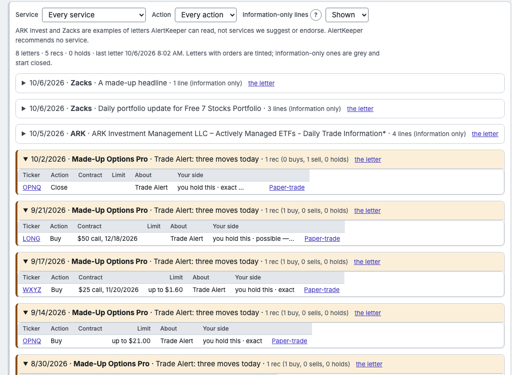
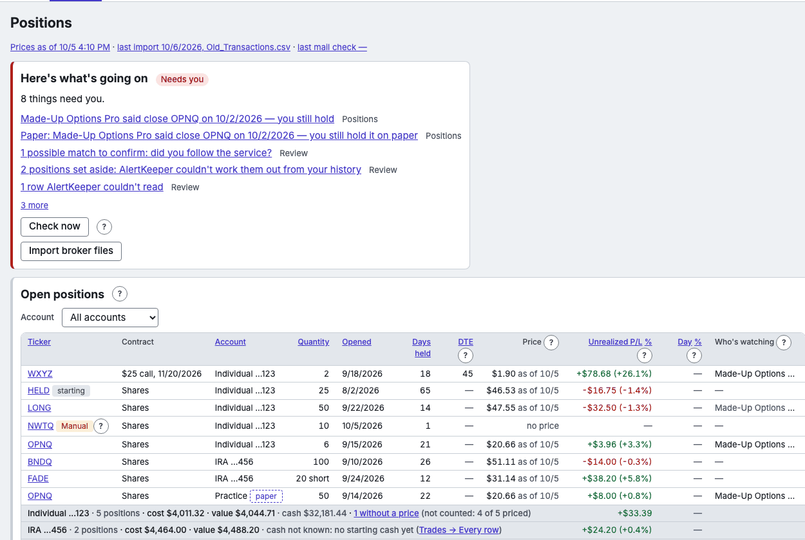

The pages
- Alerts
- Your services' letters, newest first, one block per letter -- its date, service, title and "N recs (B buys, S sells, H holds)" -- with its lines under it: recs to buy or sell, their closes, holds, and information-only lines such as ARK's trades (grey, closed until you open them).

A picture of Alerts, with made-up data. - Positions
- What you hold now, with its latest price "as of" its day, its cost, value, unrealized P/L and the day's change (each in dollars and percent; a column's name sorts by dollars, its % by percent); below, a total -- with all accounts showing, a line per account with its cash from Trades → Every row first, and paper accounts' own total; and, at the top, one line saying when prices were last saved, the last import and the last mail check (each opens its page), then what needs you.

A picture of Positions, with made-up data. - Trades
- Every trade, open and closed, with its realized P/L, how long it was held, and the service it followed.
- Trades → Every row
- Each account's money, row by row, each by what it is: trades; deposits and withdrawals; transfers in and out — to or from which of your accounts, when it's one of yours; Roth conversions; dividends, interest, fees and taxes; and bank sweeps, the account's own cash moving inside it (neither in nor out) — with the cash after each.
- Exit Scorecard
- Each close against the service's exit (ahead, behind, followed, late) or, for a close of your own, the contract's last day (right call, early).
- Performance
- How your closed trades did: Net P/L, fees paid, win rate, days held, profit factor, the number of trades, the average per trade and the largest drawdown -- for all accounts and the one you choose -- then each account's realized gains and losses and its unrealized P/L now; by service and over time below. P/L is the trades' own: deposits, withdrawals, interest, transfers and the account's other fees stay in Trades → Every row. Each figure in plain words.
- Review
- Anything AlertKeeper wasn't sure of, listed with the rows involved instead of being guessed.
- Health
- Whether AlertKeeper is working. On top, Anything wrong? lists only what isn't green; below, a card for each part -- mail, prices, accounts and files, backups, the app itself -- each green, amber or red, with Run now beside the job that keeps it.
- Import
- Your broker's files: transactions, positions and realized gain/loss, one or several at once.
- Mailbox
- The Gmail account AlertKeeper reads: when it last checked and the letters kept.
- Settings
- Accounts, the mailbox, how pages look, Exit Scorecard's thresholds, the schedule, data and backups, prices, updates.
ARK Invest and Zacks are examples of letters AlertKeeper can read, not services we suggest or endorse. AlertKeeper recommends no service.